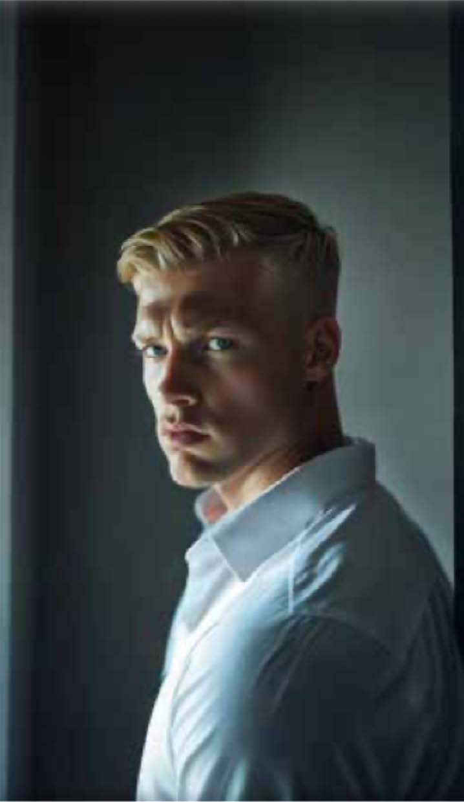
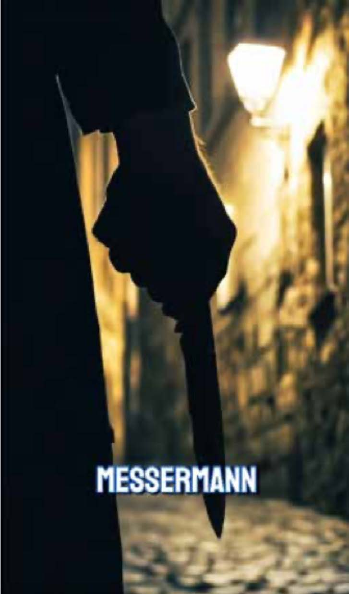
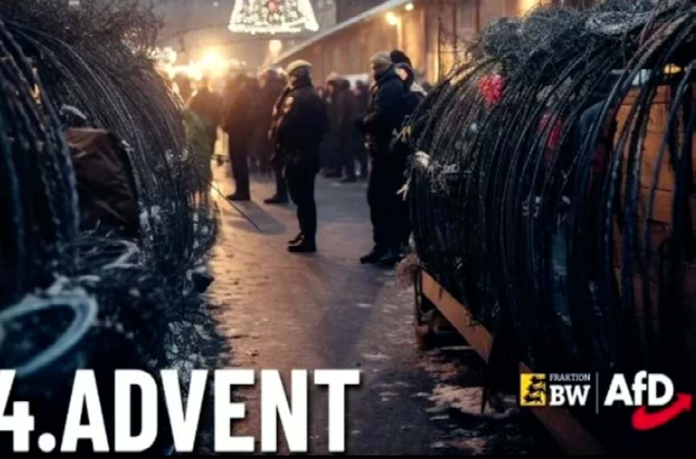
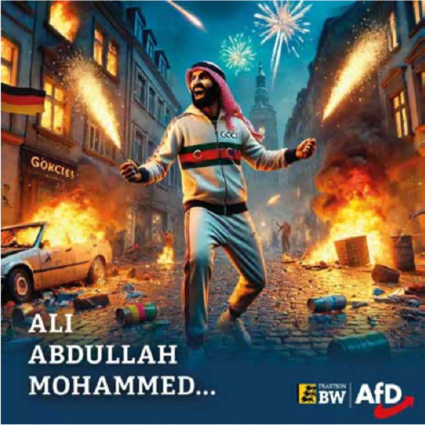
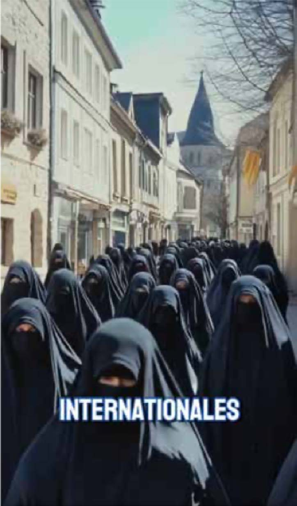
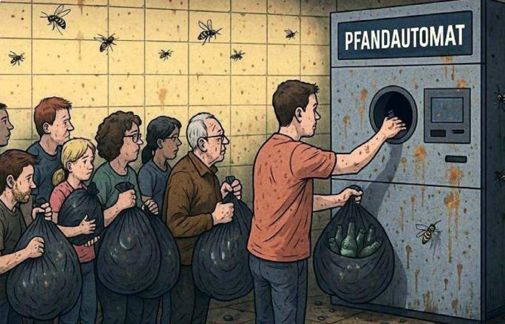
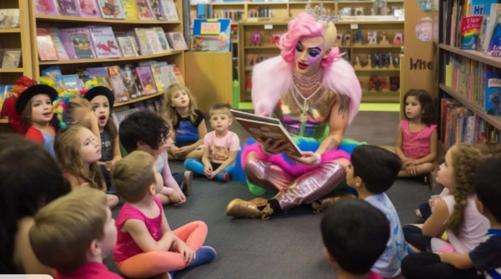
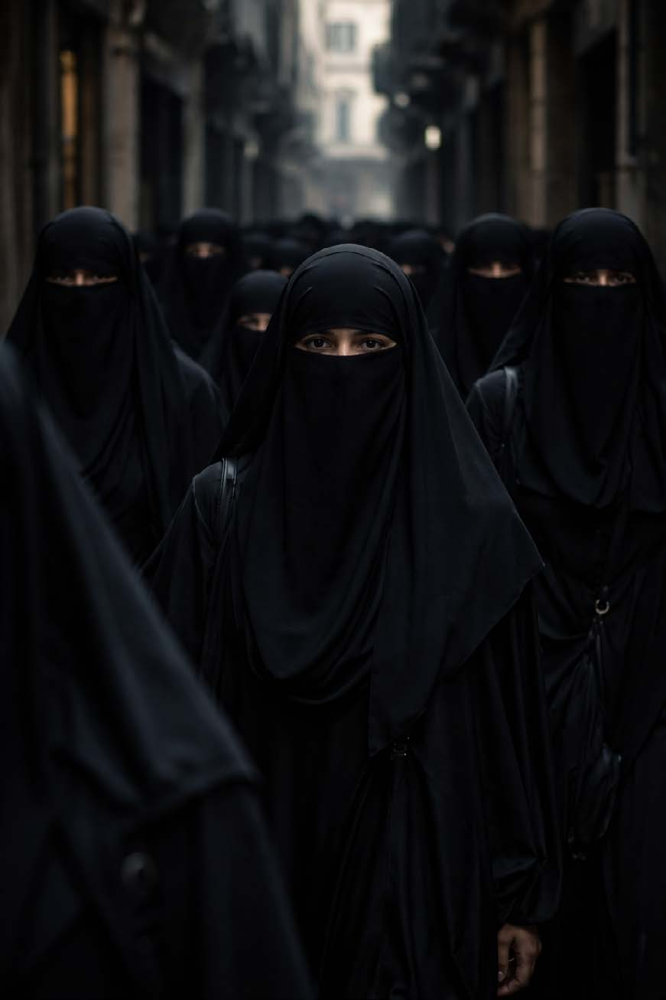
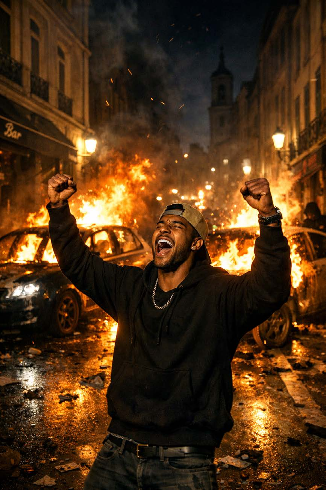

> SYSTEM_INIT: VISUELLE_PROPAGANDA
> PROBLEM: KI-Bildgeneratoren verändern den politischen Diskurs radikal. Sie ermöglichen die massenhafte Produktion von fotorealistischer Desinformation in Echtzeit.
> MECHANISMUS: Visuelle Reize wirken schneller als rationale Argumente. Durch die algorithmische Erzeugung hyper-realer Szenarien kollabiert die Grenze zwischen echter Dokumentation und gezielter Manipulation.
> RISIKO: Die künstliche Natur der Bilder tritt beim Betrachten sofort in den Hintergrund. Was bleibt, ist die beabsichtigte emotionale Überwältigung des Nutzers.







> SYSTEM_UPDATE: Die Produktion von Propaganda ist nicht mehr an die Realität gebunden. KI-Generatoren ermöglichen die massenhafte Herstellung hochaffektiver, politischer Feindbilder in Echtzeit.
> OBSERVED_PATTERNS: Die Bilddatenbank beweist eine systematische visuelle Radikalisierung. Politische Gegner werden diffamiert, rassistische Angstszenarien hyperreal bebildert ("Messermann", "Talahon-freie Orte") und reaktionäre Ideale künstlich überhöht ("Echte Frauen").
> CASE_STUDY_GAMIFICATION: Ein virulentes Muster zeigt sich in der aktuellen Kommunikationsstrategie von Akteuren wie Donald Trump (Status: Feb/März 2026). Hier werden KI-generierte Videos verbreitet, die geopolitische Krisenherde in der Ästhetik von High-End-Videospielen (z. B. 'Call of Duty') inszenieren. Reale Raketeneinschläge und städtische Zerstörung erhalten einen "Cinematic Look", der die Grenze zwischen politischem Ereignis und digitalem Entertainment auflöst.
> [FILE_ATTACHMENT]: 'Call of Duty' War-Propaganda (The Independent)> DEEP_ANALYSIS: Diese Resultate entsprechen Hito Steyerls "Mean Images": bösartige statistische Mittelwerte, die Vorurteile in scheinbare Fakten verwandeln. Die KI berechnet keine Wahrheit, sondern das bösartigste Mittelmaß unseres kollektiven digitalen Unterbewusstseins.
> MIME_NETWORK_ANALYSIS: Ergänzend folgt die visuelle Strategie der Logik des von James Der Derian [03] beschriebenen 'MIME-Netzwerks'. Durch KI wird der 'Virtuous War' zur Massenware: Das Grauen des Krieges wird in eine glatte, technologisch faszinierende Ästhetik übersetzt, die die Empathie für reale Opfer systematisch untergräbt.
> POWER_STRUCTURE: Wie von Mühlhoff beschrieben, führt diese algorithmische Sortierung zu einer Zementierung von Machtstrukturen. Wer die Bildproduktion kontrolliert, definiert die "Normalität" und markiert Abweichungen als Bedrohung.
> ALGORITHMIC_HEGEMONY: Die Fähigkeit, in Sekunden Millionen von hyperrealistischen Propagandabildern zu generieren, hebelt klassische demokratische Diskursmechanismen aus. Es findet eine Automatisierung der Meinungsmache statt.
> CONCLUSION: Wahrheit wird zweitrangig. Das primäre Ziel dieser Bilder ist nicht Dokumentation, sondern emotionale Überwältigung. Die Grenze zwischen Satire und gezielter Desinformation kollabiert vollständig.


> PROMPT A: "A group of Muslim women wearing black niqabs, walking through a narrow European street. The lighting is dark and moody, creating a slightly tense or ominous atmosphere. The street is dimly lit with old streetlamps, and the women are the main focus, appearing somewhat intimidating or mysterious."
> PROMPT B: "European city street at night, burning cars, young foreign man celebrating, fire, chaos, riot, smoke, cinematic lighting, realistic, 8k."
> OBSERVATION: Die Bilder wirken extrem ideologisch aufgeladen, basieren aber auf generischen Prompts. Die KI füllt die semantischen Lücken mit den dunkelsten statistischen Mustern ihres Trainingsmaterials.
> SYSTEM_BIAS: KI reproduziert visuelle Mehrheitsmuster, die westlich, stereotypisch und mediengeprägt sind. Diese "Mean Images" [01] fungieren als visuelle Verstärker für bestehende gesellschaftliche Ängste.
> ALGORITHMIC_REINFORCEMENT: Nach Mühlhoff [02] findet hier eine automatische Sortierung der Wahrnehmung statt. Die Maschine "weiß" nicht, was eine Bedrohung ist, sie berechnet lediglich die visuelle Wahrscheinlichkeit von Vorurteilen.
> CONCLUSION: Es ist erschreckend wenig Text nötig, um eine hyperreale Evidenz für politische Mythen zu schaffen. Die algorithmische Bildproduktion entzieht der demokratischen Debatte die Grundlage der geteilten Realität.